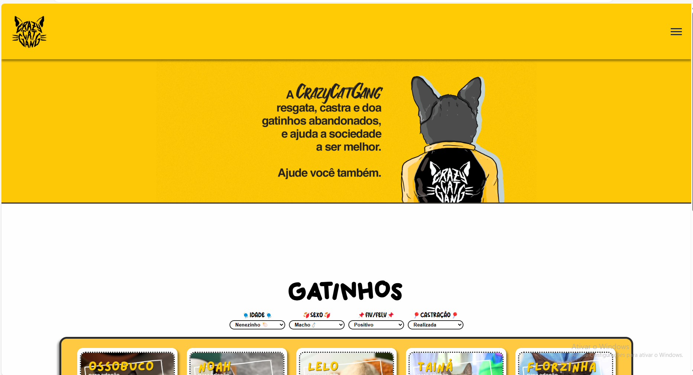

Projeto FEEITO PARA AONG CRAZY GAT GANG

Este projeto foi feito para A ONG (CCG)
O projeto foi o desenvolvimento de um site com a inteção da resolução do problema da fastração dos gatos
Para a solução deste projeto pensamos em um desenvolvimento de um filtro com os mais imporatantes para castrar aparecerem primeiro na tela
tambem foi adicionado um sistema para cadastrar um novo gato